신재생에너지발전설비기사(구) (2019-03-03 기출문제)
1과목: 임의 구분
1. 어떤 회로에 E=200+j50(V)인 전압을 가했을 때 I=5+j5(A)의 전류가 흘렀다면 이 회로의 임피던스는 약 몇 Ω인가?
- 0
- ∞
- 70+j30
- 25-j15
(정답률: 71%)

2. 이상적인 변압기에 대한 설명으로 옳은 것은?
- 단자 전류의 비 I2/I1는 권수비와 같다.
- 단자 전압의 비 V2/V1는 코일의 권수비와 같다.
- 1차측 복소전력은 2차측 부하의 복소전력과 같다.
- 1차측 단자에서 본 전체 임피던스는 부하 임피던스에 권수비의 자승의 역수를 곱한 것과 같다.
(정답률: 72%)
3. 태양광발전 전지에서 직렬저항이 발생하는 원인이 아닌 것은?
- 전면 및 후면 금속전극의 저항
- 태양광발전 전지 내의 누설전류
- 금속전극과 에미터, 베이스 사이의 접촉저항
- 태양광발전 전지의 에미터와 베이스를 통한 전류 흐름
(정답률: 78%)
4. 서로 다른 두 종류의 금속을 접촉하여 두 접점의 온도를 다르게 하면 온도차에 의해서 열 기전력이 발생하고 미세한 전류가 흐르는 현상은?
- 홀 효과(Hall effect)
- 펠티에 효과(Peltier effect)
- 제베크 효과(Seebeck effect)
- 광도전 효과((photo-conductivity effect)
(정답률: 77%)
5. 태양광발전 모듈의 I-V 특성곡선에서 일사량에 따라 가장 많이 변화하는 것은?
- 전압
- 전류
- 저항
- 커패시턴스
(정답률: 79%)
6. 태양광발전 인버터에서 태양광발전 전지의 동작점을 항상 최대가 되도록 하는 기능은?
- 자동 전압 조정 기능
- 자동 운전 정지 기능
- 단독 운전 방지 기능
- 최대전력 추종제어 기능
(정답률: 92%)
7. 태양광발전 모듈을 구성하는 직렬 셀에 음영이 생길 경우 발생하는 출력 저하 및 발열을 억제하기 위해 설치하는 소자는?
- 정류 다이오드
- 역전류 방지 퓨즈
- 바이패스 다이오드
- 역전류 방지 다이오드
(정답률: 87%)
8. 투명유리 위에 코팅된 투명전극과 그 위에 접착되어 있는 TiO2 나노입자와 전해액으로 구성된 태양광발전 전지는?
- 박막
- GIGS계
- 염료감응형
- 단결정 실리콘
(정답률: 74%)
9. PN접합 다이오드에 역방향 바이어스 전압을 인가했을 때 접합면 주변에서 발생하는 물리적 특성에 해당하지 않는 것은?
- 전계가 강해진다.
- 전위장벽이 높아진다.
- 접합 커패시턴스가 커진다.
- 공간전하 영역의 폭이 넓어진다.
(정답률: 65%)
10. 태양광발전시스템에서 지락 발생 시 누전차단기로 보호할 수 없는 경우가 발생하는 이유는?
- 지락전류에 직류성분이 포함되어 있기 때문에
- 인버터의 출력이 직접 계통에 접속되기 때문에
- 태양광발전 전지와 계통측이 절연되어 있지 않기 때문에
- 태양광발전 전지에서 발생하는 지락전류의 크기가 매우 크기 때문에
(정답률: 83%)
11. 태양광발전 어레이와 인버터 사이에 위치하는 접속함에 설치되는 소자가 아닌 것은?
- 피뢰소자
- 역류방지소자
- 바이패스소자
- 직류출력개폐기
(정답률: 64%)
12. 태양광발전 모듈의 특성치가 다음의 표와 같다. 이 모듈의 변환 효율은 약 몇 %인가?
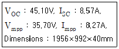
- 14.3
- 14.6
- 14.9
- 15.2
(정답률: 49%)
13. 태양광발전시스템 중 정상적으로 동작하고 있을 때 에너지 효율이 가장 좋은 방식은?
- 고정형 시스템
- 추적형 시스템
- 반고정형 시스템
- 건물일체형 시스템
(정답률: 87%)
14. 축전지 설계 시 유의하여야할 사항으로 틀린 것은?
- 가급적 자기방전율이 높은 축전지 방식을 선전한다.
- 축전지 직렬 개수는 태양광발전 전지에서도 충전 가능한지 검토하여야 한다.
- 축전지의 전압은 인버터 입력전압 범위에 포함되는지 확인하여 선정한다.
- 방재 대응형에는 대해로 인한 정전 시에 태양광발전 전지에서 충전을 하기 위한 충전전력량과 축전지 용량을 매칭할 필요가 있다.
(정답률: 83%)
15. 도가니 인발 공정(Czochralski 공정)을 거쳐서 생산되는 태양광 전지는?
- 염료
- 단결정 실리콘
- 다결정 실리콘
- 비정질 실리콘
(정답률: 63%)
16. 과부하 또는 단락이 발생하면 계통으로부터 태양광발전시스템을 자동으로 차단시키는 과전류 보호장치는?
- 스트링퓨즈
- 누전차단기
- 배선용차단기
- 바이패스다이오드
(정답률: 72%)
17. 풍력발전기가 바람의 방향을 향하도록 블레이드의 방향을 조절하는 것은?
- Pitch control
- Yaw control
- Active stall control
- Passive stall control
(정답률: 70%)
18. 트랜스리스 방식의 인버터를 선정할 경우 특히 주의해야 할 점은?
- 계통연계 보호장치
- 연계하는 계통의 전압과 결선방식
- 태양광발전 모듈의 출력특성 분석
- 계통의 전압, 주파수, 상수특성 분석
(정답률: 59%)
19. 연료전지의 특징에 대한 설명 중 틀린 것은?
- 도심지역에 설치 운영이 가능하다.
- 다양한 발전 용량에 맞게 제작이 가능하다.
- 기계적 에너지면환 과정에서 소음이 발생한다.
- 석탄가스, LNG, 메탄올 등 연료의 다양화가 가능하다.
(정답률: 80%)
20. 지표면에서 태양을 올려 보는 각(angle of elevation)이 30°인 경우에 AM(Air Mass)값은?
- 0
- 1
- 1.5
- 2
(정답률: 73%)
2과목: 임의 구분
21. IEC 76(Power Transformer)에서 변압기 Y-△ 결선방식을 각 변위 표시 기호로 나타낸 것으로 옳은 것은?
- Dd0
- Yy0
- Yd1
- Dn11
(정답률: 82%)
22. 800kW로 전기사업허가를 득하였다. 다음과 같은 주요기자재를 사용하여 최대 용량으로 태양광발전시스템을 설치하고자 할 때 모듈의 병렬 수는? (단, 모듈의 직렬 수는 19직렬로 하며, 토지면적은 충분히 여유 있는 것으로 한다. 기타 사항은 신ㆍ재생에너지 설비의 지원 등에 관한 지침을 따른다.)
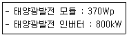
- 112병렬
- 113병렬
- 119병렬
- 125병렬
(정답률: 42%)
23. 사업의 경제성 평가 기준에 대한 설명으로 가장 옳은 것은?
- 내부수익률법에서 IRR=r이 될 경우 경제성이 있다고 판단한다.
- 내부수익률법에서 IRR＜r이 될 경우 경제성이 있다고 판단한다.
- 비용편익분석법에서 B/C Ratio＜1일 때 경제성이 있다고 판단한다.
- 순현재가지분석판단법에서 NPV＞0 일 때 경제성이 있다고 판단한다.
(정답률: 68%)
24. ‘개발행위허가’ 만으로 태양광 발전소를 건설할 수 있는 ‘관리지역’의 면적제한 기준은 최대 몇 m2 미만인가?
- 5000
- 10000
- 20000
- 30000
(정답률: 56%)
25. 경사지붕 면적이 100m2(10m×10m)인 건축물에 태양광발전시스템을 설치하려고 한다. 165Wp급 태양광발전 모듈이 가로의 길이가 1.6m, 세로의 길이가 0.8, 모듈의 온도에 따른 전압범위가 28~42Vmpp일 때 모듈의 설치 가능 개수는? (단, 인버터의 MPP전압 범위는 150~540Vmpp, 효율은 92%, 인버터의 기동전압, 모듈설치간격 및 기타 손실 등은 무시한다.)
- 62개
- 68개
- 72개
- 76개
(정답률: 54%)
26. 태양광발전시스템을 이상전압으로부터 보호하기 위한 과전압 보호장치(SPD)선정으로 틀린 것은? (단, IPZ는 Lighting Protection Zone이다.)
- 접속함에서 인버터까지의 전선로에는 LPZ Ⅱ(4/10μs, Imax＜10kA)으로 교류용을 선정한다.
- 유도뢰만 있는 어레이에서는 LPZ Ⅲ(전압 1.2/50μs+전류 8/20μs를 조합)을 사용 가능하다.
- 한전 계통인입부에는 외부의 직격회 침입을 고려하여 LPZ Ⅰ(3/350μs, Iimp＜15kA) 이상을 선정한다.
- 피뢰설비로부터 직격뢰 전류가 침입 가능한 위치에 설치된 어레이에는 LPZ Ⅰ(3/350μs, Iimp＜15kA)을 선정한다.
(정답률: 55%)
27. 북위 35°에 위치한 태양광발전시스템의 어레이 경사각이 30°이다. 동지에 정오 기준으로, 어레이간 음영의 영향을 받지 않는 최소 이격거리(m)는? (단, 모듈의 긴 면을 가로로 하며, 모듈설치 간격은 무시한다.)
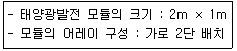
- 2.06
- 2.15
- 3.36
- 3.51
(정답률: 52%)
28. 태양광발전 어레이 가대 설계 시 고려하여야 할 수평하중은?
- 자중
- 풍하중
- 고정하중
- 적설하중
(정답률: 76%)
29. 태양광발전시스템의 도면배치 순서가 옳은 것은? (단, 배치는 태양광발전 모듈에서 계통방향으로 하며, 태양광발전 모듈은 로, 인버터는 로, 접속함은 로, 변압기는
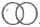
로 표기하였다.)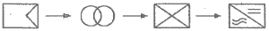
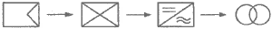
(정답률: 58%)
30. 계통연계형 태양광발전시스템 설계 시 갖추어야 할 기초자료가 아닌 것은?
- 청명일수
- 최대 폭설량
- 지질조사 기록
- 순간풍속 및 최대풍속
(정답률: 66%)
31. 태양광발전 전지(솔라셀) 직렬 연결 시 음영에 의한 출력은 몇 W인가? (단, 셀은 모두 5W×10개 이고, 음영에 의해 출력이 저하한 셀은 3.5W×4개이다.)(오류 신고가 접수된 문제입니다. 반드시 정답과 해설을 확인하시기 바랍니다.)
- 28
- 35
- 44
- 50
(정답률: 77%)
32. 태양광발전시스템의 방재 대책에 대한 사항으로 옳지 않은 것은?
- 뇌해를 방지하기 위해 피뢰소자를 사용한다.
- 내진 대책을 위하여 방화구획 관통부를 보강한다.
- 염해를 예방하기 위해 이종금속 사이에 절연물을 사용한다.
- 최다 적설 시를 대비하여 태양광발전 어레이가 매몰되지 않는 높이가 되도록 한다.
(정답률: 61%)
33. 가조시간과 일조시간에 대한 설명으로 틀린 것은?
- 맑은 날은 가조시간과 일조시간이 동일하다.
- 가조시간과 일조시간의 비를 발전률이라 한다.
- 가조시간은 태양이 뜨고 지는 때까지의 시간이다.
- 일조시간 실제 지표면에 태양이 비치는 시간이다.
(정답률: 74%)
34. 태양광발전시스템을 평지에 고정식으로 설치하는 경우 국내에서 적용하고 있는 최적경사각 범위로 가장 적합한 것은? (문제 오류로 실제 시험에서는 1, 3, 4번이 정답처리 되었습니다. 여기서는 1번을 누르면 정답 처리 됩니다.)
- 15~20°
- 20~25°
- 28~36°
- 40~60°
(정답률: 66%)
35. 계통연계형 1MW 태양광발전시스템의 단선결선도 상에 표시되는 설비가 아닌 것은?
- VCB
- GPT
- MOF
- GTO
(정답률: 66%)
36. 송ㆍ배전용전기설비 이용규정에 따라 태양광발전시스템에서 계통으로 유입되는 고조파 전류는 종합 전압 왜형률이 최대 몇 %미만이어야 하는가?
- 2
- 3
- 4
- 5
(정답률: 66%)
37. 전력품질에 들어가지 않는 항목은?
- 전압
- 주파수
- 발전량
- 정전시간
(정답률: 55%)
38. 설계조서 해석 시 우선 순위를 나열한 것으로 가장 옳은 것은?
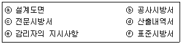
- ⓐ→ⓑ→ⓒ→ⓓ→ⓔ→ⓕ
- ⓑ→ⓐ→ⓒ→ⓕ→ⓓ→ⓔ
- ⓒ→ⓐ→ⓑ→ⓓ→ⓕ→ⓔ
- ⓔ→ⓑ→ⓐ→ⓕ→ⓒ→ⓓ
(정답률: 76%)
39. 태양광발전시스템의 월간 발전 가능량(EPM)' 산출식으로 옳은 것은? (단, PAS:표준상태에서의 태양광발전 어레이 출력(kW), HAM:월 적산 어레이 표면(경사면) 일조량(kWh/m2ㆍ월)), GS:표준상태에서의 일조강도(kW/m2), K:종합설계계수)
- EPM=PAS×(GS/HAM)×K(kWh/월)
- EPM=PAS×(HAM/GS)×K(kWh/월)
- EPM=HAM×(GS/PAS)×K(kWh/월)
- EPM=PAS×{HAM/(GS×K)}(kWh/월)
(정답률: 67%)
40. 120kWp 태양광발전시스템을 밭에 설치하여 할 때 REC 가중치는 얼마인가?
- 1.10
- 1.13
- 1.17
- 1.20
(정답률: 36%)
3과목: 임의 구분
41. 가공 전선로의 전선 구비조건이 아닌 것은?
- 도전율이 클 것
- 비중이 클 것
- 부식성이 작을 것
- 기계적 강도가 클 것
(정답률: 86%)
42. 태양광발전 어레이를 구성함에 있어서 태양광발전 모듈간의 케이블을 연결하는 배선공사방법으로 적합한 것은?
- 접속함의 설치장소는 어레이에서 멀리 설치한다.
- 케이블의 굵기는 거리에 상관없이 사용할 수 있다.
- 태양광발전 모듈의 접속용 케이블이 2가닥씩 나와 있으므로 반드시 극성을 확인할 필요는 없다.
- 태양광발전 모듈간의 배선에 사용할 전선사이즈는 단락전류에 충분히 견뎌야 한다.
(정답률: 80%)
43. 시공된 공사에 대한 재시공이 지시되는 경우가 아닌 것은?
- 시공된 공사가 품질확보가 미흡할 경우
- 관계 규정에 맞지 아니하게 시공된 경우
- 지진ㆍ해일ㆍ폭풍 등 불가할력적인 사태가 발생할 경우
- 감리원의 확인ㆍ검사에 대한 승인을 받지 아니하고 후속 공정을 진행하는 경우
(정답률: 69%)
44. 태양광발전시스템 사용전검사 시 검사항목 중 세부검사 내용이 아닌 것은?
- 접지저항 측정
- 절연저항 측정
- 검전기로 정격전압 측정
- 태양광전지 전기적 특성시험
(정답률: 46%)
45. 설계감리원의 기본임무가 아닌 것은?
- 설계 및 설계감리용역 시행에 따른 업무연락, 문제점 파악 및 민원을 해결하여야 한다.
- 과업지시서에 따라 업무를 성실히 수행하고 설계의 품질향상에 따라 노력하여야 한다.
- 설계용역 계약 및 설계감리용역 계약내용이 충실히 이행될 수 있도록 하여야 한다.
- 해당 설계용역이 관련 법령 및 전기설비기술기준 등에 적합한 내용대로 설계되는지의 여부를 확인 및 설계의 경제성 검토를 실시하고, 기술지도 등을 하여야 한다.
(정답률: 72%)
46. 감리용역이 완료된 때에는 최대 며칠 이내에 공사감리 완료보고서를 제출하여야 하는가?
- 7일
- 10일
- 15일
- 30일
(정답률: 54%)
47. 태양광발전시스템 시공 절차 중 ()에 들어갈 순서로 옳은 것은?
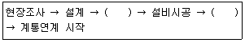
- 공사계획신고, 사용전검사
- 사용전검사, 공사계획신고
- 공사계획신고, 개발행위 준공
- 사용전검사, 신재생에너지 설치확인
(정답률: 82%)
48. 전력시설물의 설치ㆍ보수 공사 발주자는 전력시설물의 설치ㆍ보수 공자의 품질 확보 및 향상을 위하여 누구에게 공사감리를 발주하여야 하는가?
- 종합설계업을 등록한 자
- 전문설계업을 등록한 자
- 공사감리업을 등록한 자
- 전기공사업을 등록한 자
(정답률: 76%)
49. 케이블 포설 시 주의 사항으로 틀린 것은?
- 루프회로가 생기지 않도록 한다.
- 케이블 곡률 반지름을 넘지 않도록 주의한다.
- 케이블을 가능하면 음영지역에 포설하면 안된다.
- 케이블은 절연이 손상되기 쉬우므로 겨울기온에 유의하여 취급하여야 한다.
(정답률: 77%)
50. 지붕에 설치하는 태양광발전시스템 중 톱 라이트형의 특징이 아닌 것은?
- 톱 라이트의 채광 및 셀에 의한 차폐효과도 있다.
- 셀(모듈)의 배치에 따라서 개구율을 바꿀 수 있다.
- 양면수광형의 태양광발전 전지 등 수직설치 공법이 가능하다.
- 톱 라이트의 유리부분에 맞게 태양광발전 전지 유리를 설치한 타입이다.
(정답률: 60%)
51. 태양광발전 어레이 출력이 2kW를 넘는 경우 접지선의 굵기(mm2)로 적당한 것은?
- 0.75
- 1.2
- 1.5
- 4.0
(정답률: 62%)
52. 케이블 단말처리 중 시공 시 테이프 폭이 3/4로부터 2/3 정도로 중첩해 감아 놓으면 시간이 지남에 따라 융착하여 일체화하는 절연테이프 종류는?
- 보호 테이프
- 노튼 테이프
- 비닐 절연 테이프
- 자기 융착 절연테이프
(정답률: 85%)
53. 태양광발전시스템의 전기배선에 관한 설명으로 틀린 것은?
- 인버터 출력단과 계통연계점 간의 전압강하는 5% 이하로 하여야 한다.
- 모듈의 출력배선은 군별 및 극성별로 확인할 수 있도록 표시하여야 한다.
- 모듈에서 인버터에 이르는 배선에 사용되는 케이블은 모듈 전용선을 사용하여야 한다.
- 케이블이 지면 위에 설치되거나 포설되는 경우에는 피복에 손상이 발생되지 않게 별도의 조치를 취해야 한다.
(정답률: 72%)
54. 태양광발전시스템 시공 방법으로 틀린 것은?
- , 그림자의 영향을 받지 않도록 한다.
- 건축물의 방수에 문제가 없도록 설치한다.
- 인버터 설치용량은 사업계획서 상의 인버터 설계용량 이하로 한다.
- 모듈의 설치용량은 인버터 설치용량의 1⑤% 이내로 한다.
(정답률: 72%)
55. 변압기 효율과 관계없는 것은?
- 철손과 동손이 같아질 때 효율이 최대가 된다.
- 철손 및 동손은 부하율 따라 항상 비례한다.
- 변압기의 규약효율은 (출력(W)/(출력(W)+손실(W)))×100%이다.
- 최대부하(W), 평균부하(W)라 하면 부하율은 (평균부하/최대부하)×100%이다.
(정답률: 65%)
56. 접지설비 시공방법으로 옳은 것을 모두 고른 것은?
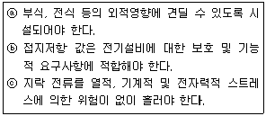
- ⓐ
- ⓐ, ⓑ
- ⓑ, ⓒ
- ⓐ, ⓑ, ⓒ
(정답률: 87%)
57. 다음 ()의 내용으로 알맞은 것은?
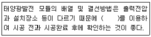
- 체크리스트
- 부품사양서
- 단설결선도
- 고정식계통도
(정답률: 82%)
58. 전선로의 수평각도가 15° 이성의 곳에 사용하며 전선의 굵기나 종류가 다른 전선을 점퍼해서 접속할 경우나 장경간 및 중요 도로, 철도 등을 횡단할 경우에도 사용하는 장주는?
- 핀장주
- 내장주
- 보통장주
- 인류장주
(정답률: 70%)
59. 전선의 표피 효과에 관한 설명으로 옳은 것은?
- 도전율이 클수록, 투자율이 작을수록 커진다.
- 도전율이 작을수록, 비투자율이 클수록 커진다.
- 전선의 단면적이 클수록, 주파수가 낮을수록 커진다.
- 전선의 단면적이 클수록, 주파수가 높을수록 커진다.
(정답률: 54%)
60. 전력시설물 공사감리업무 수행지침의 용어정의에서 공자 또는 감리업무가 원활하게 이루어지도록 하기 위하여 감리원, 발주자, 공자업자가 사전에 충분한 검토와 협의를 통하여 모두가 동의하는 조치가 이루어지도록 하는 것은?
- 지시
- 합의
- 승인
- 조정
(정답률: 58%)
4과목: 임의 구분
61. 태양광발전시스템 유지보수 점검(일상점검, 정기점검) 시 가장 점검 빈도가 높은 것은?
- 육안점검
- 절연저항점검
- 전압/전류점검
- 소음/진동점검
(정답률: 85%)
62. 다음 중 태양광발전시스템 운영 시 비치 목록으로 가장 적합하지 않는 것은?
- 발전시스템 일반점검표
- 발전시스템 운영 매뉴얼
- 발전시스템 비상탈출구 위치도
- 발전시스템의 한전계통연계 관련 서류
(정답률: 74%)
63. 태양광발전사업 게획 시 사업계획에 포함되어야 할 사항으로 틀린 것은?
- 사업 구분
- 사업계획 개요
- 전기설비 개요
- 온실가스 감축계획
(정답률: 78%)
64. 태양광발전시스템의 신뢰성 평가 및 분석 항목에 대한 설명 중 틀린 것은?
- 운전 데이터의 결측 상황
- 계측 트러블-컴퓨터 전원의 차단 및 조작오류
- 정기점검, 개수정전, 계통정전 등의 수시정지 상황
- 시스템 트러블-인버터의 정지, 직류지락, 계통지락 등에 의한 시스템의 운전정지
(정답률: 56%)
65. 태양광발전(PV) 어레이 전류-전압 특성의 현장 측정방법(KS C IEC 61829:2015)에서 전기적인 측정 데이터 및 측정 조건에 대한 기록 사항으로 틀린 것은?
- 시험 어레이의 온도 값(15분 전의 온도 값을 의미함)
- 조사강도 센서의 출력 값(15분 전의 센서 출력 값을 의미함)
- 시험 실시 15분 전의 조사강도, 온도 및 풍속 변동에 대한 정성적 분석(평가)
- 시험 어레이의 전류-전압 특성(15분 전의 전류-전압 특성을 의미함)
(정답률: 46%)
66. 인버터의 계통 전압이 규정치 이상일 경우 인버터의 표시내용으로 옳은 것은?
- Utility line fault
- Line over voltage fault
- Line phase sequence fault
- Inverter over current fault
(정답률: 79%)
67. 태양광발전시스템에 사용되는 인버터의 사용전압이 300V 초과 600V 이하의 경우는 몇 V 절연저항계를 이용하는 것이 좋은가?
- 600
- 700
- 900
- 1000
(정답률: 66%)
68. 일반적으로 태양광발전용 접속함을 설치하는 현장의 고도는 몇 m를 넘지 않아야 하는가?
- 250
- 500
- 1000
- 2000
(정답률: 53%)
69. 태양광발전시스템의 정기점검에서 절연저항 측정의 대상이 아닌 것은?
- 축전지
- 접속함
- 인버터
- 태양광발전용 개폐기
(정답률: 54%)
70. 태양광발전시스템의 스트링 다이오드의 결함을 점검하기 위한 방법은?
- 육안검사
- 접지저항 측정
- 입ㆍ출력 측정
- 과ㆍ저전압 측정
(정답률: 58%)
71. 태양광발전 모듈 및 어레이의 점검 방법을 설명한 것으로 틀린 것은?
- 먼지가 많은 설치장소에는 태양광발전 모듈 표면의 오염검사와 청소유무를 확인한다.
- 태양광발전 모듈은 현장 이동 중 파손될 수 있으므로 시공 시 외관검사를 하여야 한다.
- 태양광발전 모듈 표면 유리의 금, 변형, 이물질에 대한 오염과 프레임 등의 변형 및 지지대 등의 녹 발생 유무를 확인한다.
- 태양광발전 모듈을 고정형이나 추적형으로 설치할 경우에는 세부적인 점검이 곤란하므로 시험성적서를 확인하여 점검을 대체한다.
(정답률: 81%)
72. 태양광발전시스템의 유지관리 시 비치하여야 하는 장비가 아닌 것은?
- 유온계
- 멀티테스터
- 전력계측기
- 적외선 온도 측정기
(정답률: 76%)
73. 절연 고무장갑을 착용하여 감전사고를 방지하여야 하는 작업의 경우가 아닌 것은?
- 건조한 장소에서의 개페기 개방, 투입의 경우
- 충전부의 접속, 절단 및 점검, 보수 등의 작업 시
- 활선상태의 배전용 지지물에 누설전류의 발생 우려가 있을 때
- 정전 작업 시 역 송전이 우려되는 선로나 기기에 단락접지를 하는 경우
(정답률: 75%)
74. 접속함의 정기점검 항목으로 틀린 것은?
- 접지선의 손상
- 운전 시 이상음
- 외부배선의 손상
- 외함의 부식 및 파손
(정답률: 68%)
75. 점검계획의 수립에 있어서 점검의 내용 및 주기는 여러 가지의 조건을 고려하여 결정할 경우 고려사항이 아닌 것은?
- 환경조건
- 설비의 가격
- 설비의 중요도
- 설비의 사용기간
(정답률: 82%)
76. 산업안전보건기준에 관한 규칙에서 물체의 낙하ㆍ충격, 물체에의 끼임, 감전 또는 정전기의 대전(帶電)에 의한 위험이 있는 작업을 하는 경우 사용하는 보호구는?
- 안전대
- 보안경
- 안전화
- 방진마스크
(정답률: 79%)
77. 태양광발전 모듈의 고장현상이 아닌 것은?
- 마찰음
- 백화 현상
- 프레임 변형
- 백시트 에어 버블링
(정답률: 64%)
78. 소형 태양광 발전용 인버터의 절연 성능 시험항목이 아닌 것은?
- 내전압 시험
- 절연저항 시험
- 감전보호 시험
- 출력측 단락 시험
(정답률: 45%)
79. 전력량계의 점검 항목 중 계기용 변압ㆍ변류기의 점검내용으로 틀린 것은?
- 가스압 저하 여부
- 단자부 볼트류 조임 이완 여부
- 절연물 등에 균열, 파손, 손상 여부
- 붓싱 등에 이물질 및 먼지 등의 부착 여부
(정답률: 63%)
80. 일상점검 시 인버터의 육안검사 점검항목이 아닌 것은?
- 이상음, 악취, 발연
- 가대의 부식 및 녹
- 외함의 부식 및 파손
- 외부배선(접속 케이블)
(정답률: 52%)
5과목: 임의 구분
81. 수소와 산소의 전기화학 반응을 통하여 전기 또는 열을 생산하는 신ㆍ재생에너지 설비는?
- 연료전지 설비
- 수소에너지 설비
- 폐기물에너지 설비
- 바이오에너지 설비
(정답률: 68%)
82. 전기설비기술기준의 판단기준에 의해 저압전로에 사용하는 퓨즈는 수평으로 붙인 경우에 정격전류의 몇 배의 전류에 견디어야 하는가?
- 1.1
- 1.25
- 1.5
- 2.0
(정답률: 56%)
83. 전기설비기술기준에 의해 연료전지설비에서 과도한 압력 방지를 위해 안전밸브 설치 대신 과압방지장치로 대체 가능한 최고 사용압력은 몇 MPa 미만인가?
- 0.1
- 0.5
- 1.5
- 3
(정답률: 52%)
84. 전기저장장치를 시설하는 곳에 계측장치를 시설하여 계측하여야 할 내용이 아닌 것은?
- 주요변압기의 전력
- 주요변압기의 주파수
- 이차전지 집합체의 출력 단자의 전력
- 이차전지 집합체의 출력 단자의 충ㆍ방전 상태
(정답률: 62%)
85. 전기사업법에서 정하는 전기위원회의 구성으로 옳은 것은?
- 위원장 1명을 포함한 9명 이내의 위원
- 위원장 2명을 포함한 9명 이내의 위원
- 위원장 1명을 포함한 10명 이내의 위원
- 위원장 2명을 포함한 10명 이내의 위원
(정답률: 54%)
86. 전기공사업법에 의해 공사업자는 등록사항 중 대통령령으로 정하는 중요 사항이 변경된 경우 그 사유가 발생한 날로부터 며칠 이내에 시ㆍ도지사에게 그 사실을 신고하여야 하는가?
- 15
- 30
- 60
- 90
(정답률: 65%)
87. 전기설비기술기준에 의해 운전 중 이상이 발생할 때 수차를 자동적으로 정지시키는 장치를 시설하여야 하는 발전기의 용량은 몇 kVA 이상인가?
- 50
- 100
- 300
- 500
(정답률: 43%)
88. 전기사업법에서 구역전기사업자는 몇 kW까지 전기를 생산하여 전력시장을 통하지 아니하고 그 공급구역의 전기사용자에게 전기를 공급할 수 있는가?
- 20000
- 25000
- 30000
- 35000
(정답률: 56%)
89. 신ㆍ재생에너지 공급인증서에 관한 내용 중 옳은 것을 모두 선택한 것은?
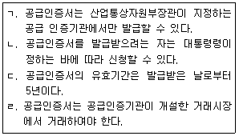
- ㄱ, ㄴ, ㄷ
- ㄱ, ㄴ, ㄹ
- ㄱ, ㄷ, ㄹ
- ㄴ, ㄷ, ㄹ
(정답률: 73%)
90. 신에너지 및 재생에너지 개발ㆍ이용ㆍ보급 촉진법에서 산업통상자원부장관은 관계중앙행정기관의 장과 협의를 한 후 신ㆍ재생에너지정책심의회의 심의를 거쳐 신ㆍ재생에너지의 기술개발 및 이용ㆍ보급을 촉진하기 위한 기본계획을 몇 년마다 수립하여야 되는가?
- 1년
- 3년
- 5년
- 10년
(정답률: 67%)
91. 전기설비기술기준의 판단기준에 의해 정격전류 50A의 과전류차단기를 220V의 전로에서 사용 시 100A의 전류가 흐를 경우 용단되어야 하는 시간은?
- 2분 이내
- 4분 이내
- 6분 이내
- 8분 이내
(정답률: 40%)
92. 산업통상자원부장관이 전기의 보편적 공급의 구체적 내용을 정하는 경우 고려사항으로 틀린 것은?
- 사회복지의 증진
- 전기의 보급 정도
- 공공의 이익과 안전
- 전기발전량의 여유 정도
(정답률: 67%)
93. 신에너지 및 재생에너지 개발ㆍ이용ㆍ보급촉진법에서 정한 공급의무자는 지난 연도 총전력생산량의 합계에 일정비율을 곱한 임무공급량 이상을 신ㆍ재생에너지로 공급하여야 한다. 2019년도 의무공급량의 비율은?
- 4%
- 5%
- 6%
- 7%
(정답률: 44%)
94. 온실가스에 해당하지 않는 것은?
- 오존(O3)
- 메탄(CH4)
- 이산화탄소(CO2)
- 아산화질소(N2O)
(정답률: 66%)
95. 용어에 대한 설명 중 틀린 것은?
- “계통연계”란 분산형전원을 송전사업자나 배전사업자의 전력계통에 접속하는 것을 말한다.
- “접속설비”란 공용 전력계통으로부터 특정 분산형전원 설치자의 전기설비에 이르기까지의 전선로를 말하며, 이에 부속하는 개폐장치, 모선 등은 해당되지 않는다.
- “단순 병렬운전”이란 자가용 발전설비를 배전계통에 연계하여 운전하되, 생산한 전력의 전부를 자체적으로 소비하기 위한 것으로서 생산한 전력이 연계계통으로 유입되지 않는 병렬 형태를 말한다.
- “단독운전”이란 전력계통의 일부가 전력계통의 전원과 전기적으로 분리된 상태에서 분산형전원에 의해서만 가압되는 상태를 말한다.
(정답률: 62%)
96. 재생에너지에 해당하지 않는 것은?
- 태양에너지
- 수소에너지
- 해양에너지
- 지열에너지
(정답률: 87%)
97. 저압 옥내 직류 2선식 전기설비에서 반드시 접지를 해야 하는 경우는?
- 사용전압이 400V 이상인 경우
- 최대전류 30mA 이하의 직류화재경보회로
- 접지검출기를 설치하고 특정구역내의 산업용 기계기구에만 공급하는 경우
- 고압 또는 특고압과 저압의 혼촉에 의한 위험방지 시설을 적용한 교류계통으로부터 공급을 받는 정류기에서 인출되는 직류계통
(정답률: 57%)
98. 에너지 자립도와 관련성이 가장 적은 지표는?
- 국내 생산에너지량
- 국내 총발전설비량
- 국내 총소비에너지량
- 우리나라가 국외에서 개발(지분 취득을 포함)한 에너지량
(정답률: 41%)
99. 신ㆍ재생에너지전문위원회 위원은 신ㆍ재생에너지 분야에 관한 전문지식을 가진 사람으로서 누가 위촉하는 사람으로 하는가?
- 국무총리
- 행정안전부장관
- 중소벤처기업부장관
- 산업통상자원부장관
(정답률: 80%)
100. 전로에 지락이 생겼을 경우 자동적으로 전로를 차단하는 장치를 시설하지 않아도 되는 경우로 틀린 것은?
- 기계기구가 유도전동기 2차측 전로에 접속되는 것일 경우
- 기계기구를 발전소ㆍ변전소ㆍ개폐소ㆍ또는 이에 준하는 곳에 시설하는 경우
- 대지전압 300V 이하인 기계기구를 물기가 있는 곳 이외의 곳에 시설하는 경우
- 그 전로의 전원측에 절연변압기(2차 전압이 300V 이하인 경우에 한한다)를 시설하고 또한 그 절연변압기의 부하측의 전로에 접지하지 아니하는 경우
(정답률: 60%)